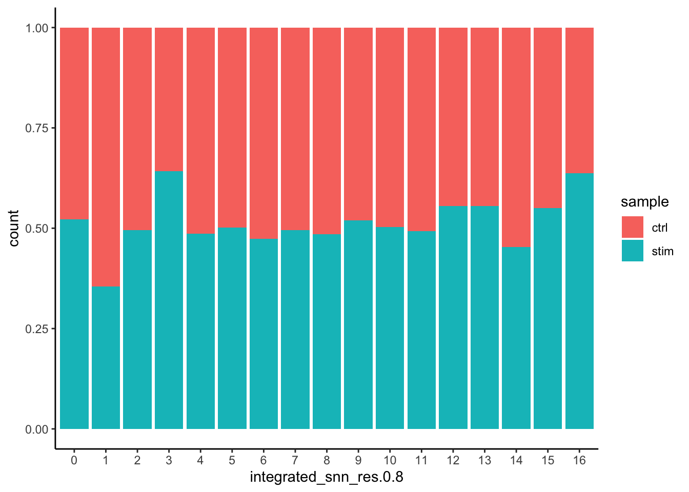

# Extract identity and sample information from seurat object to determine the number of cells per cluster per sample
n_cells <- FetchData(seurat_integrated,
vars = c("ident", "sample")) %>%
dplyr::count(ident, sample)
# Barplot of number of cells per cluster by sample
ggplot(n_cells, aes(x=ident, y=n, fill=sample)) +
geom_bar(position=position_dodge(), stat="identity") +
theme_classic() +
geom_text(aes(label=n), vjust = -.2, position=position_dodge(1))Clustering QC
Approximate time: 90 minutes
Learning Objectives:
- Evaluate whether clustering artifacts are present
- Determine the quality of clustering with PCA and UMAP plots, and decide when to re-cluster
- Assess known cell type markers to hypothesize cell type identities of clusters
Single-cell RNA-seq clustering analysis
Now that we have performed the integration, we want to know the different cell types present within our population of cells.

Goals:
- To determine whether clusters represent true cell types or cluster due to biological or technical variation, such as clusters of cells in the S phase of the cell cycle, clusters of specific batches, or cells with high mitochondrial content.
- To use known cell type marker genes to determine the identities of the clusters.
Challenges: - Identifying the cell types of each cluster - Maintaining patience as this can be a highly iterative process between clustering and marker identification (sometimes even going back to the QC filtering or normalization)
Recommendations:
- Have a good idea of your expectations for the cell types to be present and a handful of marker genes for these cell types. Know whether you expect cell types of low complexity or higher mitochondrial content AND whether the cells are differentiating
- Identify any junk clusters for removal. Possible junk clusters could include those with high mitochondrial content and low UMIs/genes
- If not detecting all cell types as separate clusters, try changing the UMAP resolution first, and if this doesn’t work, then can alter the number of PCs used for clustering, the number of variable genes used, or subset the dataset to clusters of interest and re-cluster
Exploration of quality control metrics
To determine whether our clusters might be due to artifacts such as cell cycle phase or mitochondrial expression, it can be useful to explore these metrics visually to see if any clusters exhibit enrichment or are different from the other clusters. However, if enrichment or differences are observed for particular clusters it may not be worrisome if it can be explained by the cell type.
To explore and visualize the various quality metrics, we will use the versatile DimPlot() and FeaturePlot() functions from Seurat.
Segregation of clusters by sample
We can start by exploring the distribution of cells per cluster in each sample:
We can visualize the cells per cluster for each sample using the UMAP:
# UMAP of cells in each cluster by sample
DimPlot(seurat_integrated,
label = TRUE,
split.by = "sample") + NoLegend()Additionally, we can supply the metadata dataframe from our seurat object into ggplot to create more visuals. Looking at a UMAP is a great way to get a first pass look at your dataset, but we encourage you to look at your data in multiple different ways. For example, looking at the proportion of cells from a sample in each cluster.
# Barplot of proportion of cells in each cluster by sample
ggplot(seurat_integrated@meta.data) +
geom_bar(aes(x=integrated_snn_res.0.8, fill=sample),
position=position_fill()) +
theme_classic()
Generally, we expect to see the majority of the cell type clusters to be present in all conditions; however, depending on the experiment we might expect to see some condition-specific cell types present. These clusters look pretty similar between conditions, which is good since we expected similar cell types to be present in both control and stimulated conditions.
Segregation of clusters by cell cycle phase
Next, we can explore whether the cells cluster by the different cell cycle phases. We did not regress out variation due to cell cycle phase when we performed the SCTransform normalization and regression of uninteresting sources of variation. If our cell clusters showed large differences in cell cycle expression, this would be an indication we would want to re-run the SCTransform and add the S.Score and G2M.Score to our variables to regress, then re-run the rest of the steps.
# Explore whether clusters segregate by cell cycle phase
DimPlot(seurat_integrated,
label = TRUE,
split.by = "Phase") + NoLegend()We do not see much clustering by cell cycle score, so we can proceed with the QC.
Segregation of clusters by various sources of uninteresting variation
Next we will explore additional metrics, such as the number of UMIs and genes per cell, S-phase and G2M-phase markers, and mitochondrial gene expression by UMAP. Looking at the individual S and G2M scores can give us additional information to checking the phase as we did previously.
# Determine metrics to plot present in seurat_integrated@meta.data
metrics <- c("nUMI", "nGene", "S.Score", "G2M.Score", "mitoRatio")
FeaturePlot(seurat_integrated,
reduction = "umap",
features = metrics,
pt.size = 0.4,
order = TRUE,
min.cutoff = 'q10',
label = TRUE)
Note
The order argument will plot the positive cells above the negative cells, while the min.cutoff argument will determine the threshold for shading. A min.cutoff of q10 translates to the 10% of cells with the lowest expression of the gene will not exhibit any purple shading (completely gray).
The metrics seem to be relatively even across the clusters, with the exception of nGene exhibiting slightly higher values in clusters to the left of the plot. This can be more clearly seen when we look at the distribution as a boxplot. We can keep an eye on these clusters to see whether the cell types may explain the increase.
# Boxplot of nGene per cluster
ggplot(seurat_integrated@meta.data) +
geom_boxplot(aes(x=integrated_snn_res.0.8, y=nGene,
fill=integrated_snn_res.0.8)) +
theme_classic() +
NoLegend()If we see differences corresponding to any of these metrics at this point in time, then we will often note them and then decide after identifying the cell type identities whether to take any further action.
Exploration of the PCs driving the different clusters
We can also explore how well our clusters separate by the different PCs; we hope that the defined PCs separate the cell types well. To visualize this information, we need to extract the UMAP coordinate information for the cells along with their corresponding scores for each of the PCs to view by UMAP.
First, we identify the information we would like to extract from the Seurat object, then, we can use the FetchData() function to extract it.
# Defining the information in the seurat object of interest
columns <- c(paste0("PC_", 1:16),
"ident",
"UMAP_1", "UMAP_2")
# Extracting this data from the seurat object
pc_data <- FetchData(seurat_integrated,
vars = columns)
head(pc_data) PC_1 PC_2 PC_3 PC_4 PC_5
ctrl_AAACATACAATGCC-1 -14.9778236 -2.879193 -5.05935118 -1.602766 0.8728779
ctrl_AAACATACATTTCC-1 22.3923271 -5.296913 4.95195846 3.112632 0.3379874
ctrl_AAACATACCAGAAA-1 28.9847264 1.203408 -5.94799284 -1.042701 -7.5690434
ctrl_AAACATACCAGCTA-1 20.1284164 2.826128 -5.26506094 -3.620790 -11.3740400
ctrl_AAACATACCATGCA-1 -0.4713399 1.122713 5.19520893 -23.884004 -2.2996247
ctrl_AAACATACCTCGCT-1 22.8011154 -3.431699 -0.06811772 3.248048 -2.9509455
PC_6 PC_7 PC_8 PC_9 PC_10
ctrl_AAACATACAATGCC-1 -1.501420 0.5327841 -0.5855545 0.8866479 0.8223524
ctrl_AAACATACATTTCC-1 -7.873002 2.2740054 -5.8362430 -0.9666741 0.2170141
ctrl_AAACATACCAGAAA-1 5.477813 -10.7953185 19.5052392 -1.8312647 2.1803084
ctrl_AAACATACCAGCTA-1 2.339693 -4.3977231 -0.9173702 -2.2846928 6.1691837
ctrl_AAACATACCATGCA-1 2.013001 -1.2188812 -6.0930183 -4.4226968 -5.7635449
ctrl_AAACATACCTCGCT-1 -3.990378 3.7467244 0.5165570 1.9615799 -1.5014139
PC_11 PC_12 PC_13 PC_14 PC_15
ctrl_AAACATACAATGCC-1 -1.7228802 -0.1832132 0.2985759 -0.04539058 1.2609419
ctrl_AAACATACATTTCC-1 3.1051321 -0.7964707 2.8982516 0.04362601 -3.1899372
ctrl_AAACATACCAGAAA-1 -7.7965824 -1.3324607 -2.3117140 3.06677862 1.6633818
ctrl_AAACATACCAGCTA-1 -1.6511025 -2.4827588 3.1481454 0.29120133 1.2874378
ctrl_AAACATACCATGCA-1 2.6080354 -6.7093986 -5.2829855 6.68742950 0.4564602
ctrl_AAACATACCTCGCT-1 -0.1431181 -0.6372477 -4.6625496 6.11468471 -2.1451294
PC_16 ident UMAP_1 UMAP_2
ctrl_AAACATACAATGCC-1 0.1993319 2 7.270473 0.9072988
ctrl_AAACATACATTTCC-1 5.3805322 1 -8.742020 1.5622634
ctrl_AAACATACCAGAAA-1 -3.0593032 3 -10.032904 4.7139827
ctrl_AAACATACCAGCTA-1 0.3093775 3 -8.363044 5.0377137
ctrl_AAACATACCATGCA-1 0.4905686 4 6.875784 -4.6442526
ctrl_AAACATACCTCGCT-1 2.3744525 1 -9.338899 2.2808882
Note 1
How did we know in the FetchData() function to include UMAP_1 to obtain the UMAP coordinates? The Seurat cheatsheet describes the function as being able to pull any data from the expression matrices, cell embeddings, or metadata.
For instance, if you explore the seurat_integrated@reductions list object, the first component is for PCA, and includes a slot for cell.embeddings. We can use the column names (PC_1, PC_2, PC_3, etc.) to pull out the coordinates or PC scores corresponding to each cell for each of the PCs.
We could do the same thing for UMAP:
# Extract the UMAP coordinates for the first 10 cells
seurat_integrated@reductions$umap@cell.embeddings[1:10, 1:2] UMAP_1 UMAP_2
ctrl_AAACATACAATGCC-1 7.270473 0.9072988
ctrl_AAACATACATTTCC-1 -8.742020 1.5622634
ctrl_AAACATACCAGAAA-1 -10.032904 4.7139827
ctrl_AAACATACCAGCTA-1 -8.363044 5.0377137
ctrl_AAACATACCATGCA-1 6.875784 -4.6442526
ctrl_AAACATACCTCGCT-1 -9.338899 2.2808882
ctrl_AAACATACCTGGTA-1 -10.030569 -5.2654685
ctrl_AAACATACGATGAA-1 5.792516 1.9372119
ctrl_AAACATACGCCAAT-1 -8.717156 3.0439993
ctrl_AAACATACGCTTCC-1 8.764771 4.2027954The FetchData() function just allows us to extract the data more easily.
Note 2
The pre-existing seurat_integrated loaded in previously was created using an older version of Seurat. As such the columns we Fetch() are in upper case (i.e UMAP_1). If you are using your own seurat object using a newer version of Seurat you will need to change the column names as shown below. Alternatively, explore your Seurat object to see how they have been stored.
# Defining the information in the seurat object of interest
columns <- c(paste0("PC_", 1:16),
"ident",
"umap_1", "umap_2")
columns [1] "PC_1" "PC_2" "PC_3" "PC_4" "PC_5" "PC_6" "PC_7" "PC_8"
[9] "PC_9" "PC_10" "PC_11" "PC_12" "PC_13" "PC_14" "PC_15" "PC_16"
[17] "ident" "umap_1" "umap_2"In the UMAP plots below, the cells are colored by their PC score for each respective principal component.
Let’s take a quick look at the top 16 PCs:
# Adding cluster label to center of cluster on UMAP
umap_label <- FetchData(seurat_integrated,
vars = c("ident", "UMAP_1", "UMAP_2")) %>%
group_by(ident) %>%
dplyr::summarise(x=mean(UMAP_1), y=mean(UMAP_2))
# Plotting a UMAP plot for each of the PCs
map(paste0("PC_", 1:16), function(pc){
ggplot(pc_data,
aes(UMAP_1, UMAP_2)) +
geom_point(aes_string(color=pc),
alpha = 0.7) +
scale_color_gradient(guide = FALSE,
low = "grey90",
high = "blue") +
geom_text(data=umap_label,
aes(label=ident, x, y)) +
ggtitle(pc)
}) %>%
plot_grid(plotlist = .)We can see how the clusters are represented by the different PCs. For instance, the genes driving PC_2 exhibit higher expression in clusters 8 and 12. We could look back at our genes driving this PC to get an idea of what the cell types might be:
# Examine PCA results
print(seurat_integrated[["pca"]], dims = 1:5, nfeatures = 5)PC_ 1
Positive: FTL, TIMP1, FTH1, C15orf48, CXCL8
Negative: RPL3, RPL13, RPS6, RPS18, RPL10
PC_ 2
Positive: GNLY, CCL5, NKG7, GZMB, FGFBP2
Negative: CD74, IGHM, IGKC, HLA-DRA, CD79A
PC_ 3
Positive: CD74, IGKC, HLA-DRA, IGHM, HLA-DRB1
Negative: TRAC, FTL, CCL2, PABPC1, S100A8
PC_ 4
Positive: CD74, IGHM, CCL5, GNLY, IGKC
Negative: HSPB1, CACYBP, HSPH1, HSP90AB1, HSPA8
PC_ 5
Positive: VMO1, FCGR3A, MS4A7, TIMP1, TNFSF10
Negative: CCL2, FTL, CXCL8, S100A8, S100A9 With the GNLY and NKG7 genes as positive markers of PC_2, we can hypothesize that clusters 8 and 12 correspond to NK cells. This just hints at what the clusters identity could be, with the identities of the clusters being determined through a combination of the PCs.
To truly determine the identity of the clusters and whether the resolution is appropriate, it is helpful to explore a handful of known gene markers for the cell types expected.
Exploring known cell type markers
With the cells clustered, we can explore the cell type identities by looking for known markers. The UMAP plot with clusters marked is shown, followed by the different cell types expected.
DimPlot(object = seurat_integrated,
reduction = "umap",
label = TRUE) + NoLegend()| Cell Type | Marker |
|---|---|
| CD14+ monocytes | CD14, LYZ |
| FCGR3A+ monocytes | FCGR3A, MS4A7 |
| Conventional dendritic cells | FCER1A, CST3 |
| Plasmacytoid dendritic cells | IL3RA, GZMB, SERPINF1, ITM2C |
| B cells | CD79A, MS4A1 |
| T cells | CD3D |
| CD4+ T cells | CD3D, IL7R, CCR7 |
| CD8+ T cells | CD3D, CD8A |
| NK cells | GNLY, NKG7 |
| Megakaryocytes | PPBP |
| Erythrocytes | HBB, HBA2 |
The FeaturePlot() function from seurat makes it easy to visualize a handful of genes using the gene IDs stored in the Seurat object. We can easily explore the expression of known gene markers on top of our UMAP visualizations. Let’s go through and determine the identities of the clusters. To access the normalized expression levels of all genes, we can use the normalized count data stored in the RNA assay slot.
Note
The SCTransform normalization was performed only on the 3000 most variable genes, so many of our genes of interest may not be present in this data.
# Select the RNA counts slot to be the default assay
DefaultAssay(seurat_integrated) <- "RNA"
# Normalize RNA data for visualization purposes
seurat_integrated <- NormalizeData(seurat_integrated, verbose = FALSE)
seurat_integratedAn object of class Seurat
31130 features across 29629 samples within 3 assays
Active assay: RNA (14065 features, 0 variable features)
2 layers present: counts, data
2 other assays present: SCT, integrated
2 dimensional reductions calculated: pca, umap
Note
Assay is a slot defined in the Seurat object, it has multiple slots within it. In a given assay, the counts slot stores non-normalized raw counts, and the data slot stores normalized expression data. Therefore, when we run the NormalizeData() function in the above code, the normalized data will be stored in the data slot of the RNA assay while the counts slot will remain unaltered.
Depending on our markers of interest, they could be positive or negative markers for a particular cell type. The combined expression of our chosen handful of markers should give us an idea on whether a cluster corresponds to that particular cell type.
For the markers used here, we are looking for positive markers and consistency of expression of the markers across the clusters. For example, if there are two markers for a cell type and only one of them is expressed in a cluster - then we cannot reliably assign that cluster to the cell type.
CD14+ monocyte markers
FeaturePlot(seurat_integrated,
reduction = "umap",
features = c("CD14", "LYZ"),
order = TRUE,
min.cutoff = 'q10',
label = TRUE)CD14+ monocytes appear to correspond to clusters 1, and 3. We wouldn’t include clusters 14 and 10 because they do not highly express both of these markers.
FCGR3A+ monocyte markers
FeaturePlot(seurat_integrated,
reduction = "umap",
features = c("FCGR3A", "MS4A7"),
order = TRUE,
min.cutoff = 'q10',
label = TRUE)FCGR3A+ monocytes markers distinctly highlight cluster 10, although we do see some decent expression in clusters 1 and 3 We would like to see additional markers for FCGR3A+ cells show up when we perform the marker identification.
Macrophages
FeaturePlot(seurat_integrated,
reduction = "umap",
features = c("MARCO", "ITGAM", "ADGRE1"),
order = TRUE,
min.cutoff = 'q10',
label = TRUE)We don’t see much overlap of our markers, so no clusters appear to correspond to macrophages; perhaps cell culture conditions negatively selected for macrophages (more highly adherent).
Conventional dendritic cell markers
FeaturePlot(seurat_integrated,
reduction = "umap",
features = c("FCER1A", "CST3"),
order = TRUE,
min.cutoff = 'q10',
label = TRUE)The markers corresponding to conventional dendritic cells identify cluster 14 (both markers consistently show expression).
Plasmacytoid dendritic cell markers
FeaturePlot(seurat_integrated,
reduction = "umap",
features = c("IL3RA", "GZMB", "SERPINF1", "ITM2C"),
order = TRUE,
min.cutoff = 'q10',
label = TRUE)Plasmacytoid dendritic cells represent cluster 16. While there are a lot of differences in the expression of these markers, we see cluster 16 (though small) is consistently strongly expressed.
Seurat also has a built in visualization tool which allows us to view the average expression of genes across clusters called DotPlot(). This function additionally shows us how many cells within the cluster have expression of one gene. As input, we supply a list of genes - note that we cannot use the same gene twice or an error will be thrown.
# List of known celltype markers
markers <- list()
markers[["CD14+ monocytes"]] <- c("CD14", "LYZ")
markers[["FCGR3A+ monocyte"]] <- c("FCGR3A", "MS4A7")
markers[["Macrophages"]] <- c("MARCO", "ITGAM", "ADGRE1")
markers[["Conventional dendritic"]] <- c("FCER1A", "CST3")
markers[["Plasmacytoid dendritic"]] <- c("IL3RA", "GZMB", "SERPINF1", "ITM2C")
# Create dotplot based on RNA expression
DotPlot(seurat_integrated, markers, assay="RNA")
Exercises
Hypothesize the clusters corresponding to each of the different clusters in the table:
| Cell Type | Clusters |
|---|---|
| CD14+ monocytes | 1, 3 |
| FCGR3A+ monocytes | 10 |
| Conventional dendritic cells | 14 |
| Plasmacytoid dendritic cells | 16 |
| Marcrophages | - |
| B cells | ? |
| T cells | ? |
| CD4+ T cells | ? |
| CD8+ T cells | ? |
| NK cells | ? |
| Megakaryocytes | ? |
| Erythrocytes | ? |
| Unknown | ? |
Note
If any cluster appears to contain two separate cell types, it’s helpful to increase our clustering resolution to properly subset the clusters. Alternatively, if we still can’t separate out the clusters using increased resolution, then it’s possible that we had used too few principal components such that we are just not separating out these cell types of interest. To inform our choice of PCs, we could look at our PC gene expression overlapping the UMAP plots and determine whether our cell populations are separating by the PCs included.
Now we have a decent idea as to the cell types corresponding to the majority of the clusters, but some questions remain:
- T cell markers appear to be highly expressed in may clusters. How can we differentiate and subset the larger group into smaller subset of cells?
- Do the clusters corresponding to the same cell types have biologically meaningful differences? Are there subpopulations of these cell types?
- Can we acquire higher confidence in these cell type identities by identifying other marker genes for these clusters?
Marker identification analysis can help us address all of these questions!!
The next step will be to perform marker identification analysis, which will output the genes that significantly differ in expression between clusters. Using these genes we can determine or improve confidence in the identities of the clusters/subclusters.